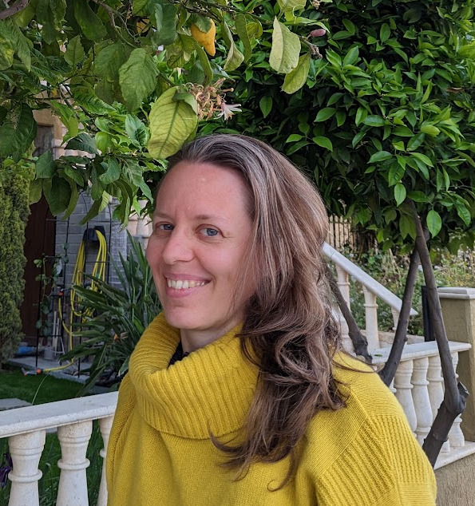

Marianna Deganutti

Biography and interests
Marianna Deganutti is a Researcher at the Slovak Academy of Sciences, Institute of World Literature, currently based in Munich. Previously she was a postdoc for UNREST at the University of Bath. She holds a degree in International and Diplomatic Sciences at the University of Trieste, a degree in Philosophy at the University of Milan, and a master and a D.Phil (PhD) in Modern Languages at the University of Oxford. Her research interests are literary multilingualism, code-switching, borderland writers, trauma studies, and comparative literature.
News
-
Dec 2024
My book, Moj jezik v tvojih besedah - La mia lingua nelle tue parole, is a finalist at the prestigious Mario Luzi literary prize and the Premio di Poesia San Vito al Tagliamento. -
Oct 2024
I will present my book, Moj jezik v tvojih besedah - La mia lingua nelle tue parole, at Ubik Trieste on the 30th October 2024 at 18:00 and at the Biblioteca Civica di Cividale del Friuli on the 31st October 2024 at 18:00. -
Aug 2024
The LangueFlow group has just published a Call for Papers on literary heterographics, script-switching and multiscriptism for a one-day colloquium on 14 March 2025. -
May 2024
My poetry collection, Moj jezik v tvojih besedah - La mia lingua nelle tue parole, has been presented by the Slovene radio programme S knjižnega trga (SLO). -
May 2024
I will present my book, Moj jezik v tvojih besedah - La mia lingua nelle tue parole, at Slovenska matica in Ljubljana on the 28th May 2024 at 18:00. -
May 2024
My book Moj jezik v tvojih besedah - La mia lingua nelle tue parole was signalled at the International poetry and narrative award "Europa in versi e in prosa" 2024. -
May 2024
I'm giving a lecture on Border Writing as a Language Contact Literary Case at the Institute of World literature SAS. -
May 2024
I was awarded the 4th place of the "A vento e sole" (edited poetry) prize with the collection of poems Moj jezik v tvojih besedah - La mia lingua nelle tue parole. -
March 2024
Became a Researcher at the Slovak Academy of Sciences, Institute of World Literature.